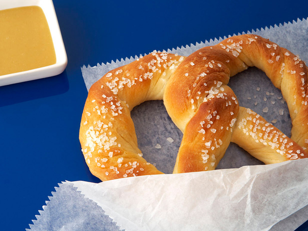

Soft Pretzels

Description
A baked bread originating from Germany that is typically shaped in a knot.
Ingredients
Pretzel Dough
- 1 1/2 cups warm (110 to 115 degrees F) water
- 1 tablespoon sugar
- 2 teaspoons kosher salt
- 1 package active dry yeast
- 22 ounces all-purpose flour, approximately 4 1/2 cups
- 2 ounces butter, melted
Prior to Baking
- baking soda
- water
Steps
- Combine the water, sugar and kosher salt in the bowl of a stand mixer and sprinkle the yeast on top.
Allow
to sit for 5 minutes or until the mixture begins to foam. Add the flour and butter and, using the
dough
hook
attachment, mix on low speed until well combined. Change to medium speed and knead until the dough
is
smooth
and pulls away from the side of the bowl, approximately 4 to 5 minutes. Remove the dough from the
bowl,
clean the bowl and then oil it well with vegetable oil. Return the dough to the bowl, cover with
plastic
wrap and sit in a warm place for approximately 50 to 55 minutes or until the dough has doubled in
size.
- Preheat the oven to 450 degrees F. Line 2 half-sheet pans with parchment paper and lightly brush
with
the
vegetable oil. Set aside.
- Bring the 10 cups of water and the baking soda to a rolling boil in an 8-quart saucepan or roasting
pan.
- In the meantime, turn the dough out onto a slightly oiled work surface and divide into 8 equal
pieces.
Roll
out each piece of dough into a 24-inch rope. Make a U-shape with the rope, holding the ends of the
rope,
cross them over each other and press onto the bottom of the U in order to form the shape of a
pretzel.
Place
onto the parchment-lined half sheet pan.
- Place the pretzels into the boiling water, 1 by 1, for 30 seconds. Remove them from the water using
a
large
flat spatula. Return to the half sheet pan, and sprinkle with the pretzel salt. Bake until dark
golden
brown
in color, approximately 12 to 14
minutes. Transfer to a cooling rack for at least 5 minutes before serving.